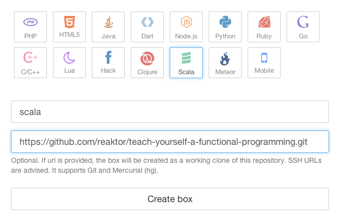
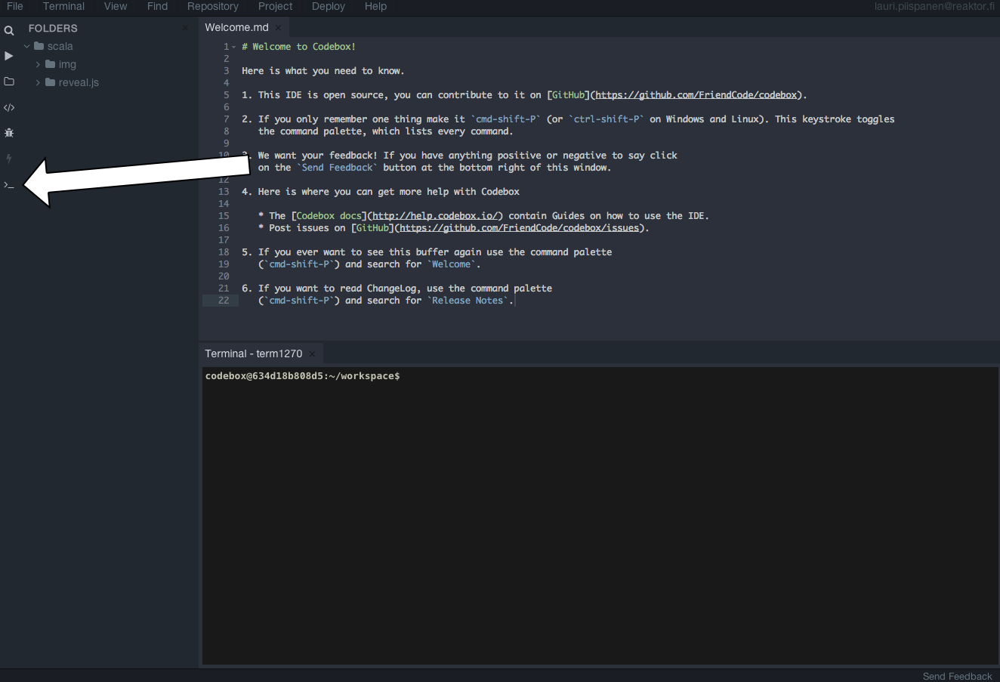

Teach yourself a functional programming
A journey to the wonderful world of immutability, statelessness and such
Class by Reaktor / @ReaktorNow
First, a bit of history...
(yawn)
Based on lambda calculus
Lisp in the 50's
The second coming of FP
Types?
15
Int
"fifteen plus one"
String
true/false
Boolean
Static vs dynamic
Static: type known at compile time.
All things still have types at runtime.
15 + 2
Int = 17
"foo" + "bar"
String = foobar
15 * "foo"
error
What is functional programming?
Environment setup
codebox.io
Create your account now
Create a Scala box, and choose this url:
https://github.com/reaktor/teach-yourself-a-functional-programming.git

Terminal is here
Immutability
Don't change things
Create new things instead
But why?
var d = Date.noon()
robotVacuum.runAt(d)
d.setTime(Date.midnight())
dishwasher.runAt(d)
When will robotVacuum run?

If you use vars you're doing it wrong.
Exercise
Try other methods in REPL:
http://tinyurl.com/scala-list
Higher order functions
Function
As learned earlier, a function takes an argument and returns a value

Minor recap to type signatures
Int => Int
def foobar(a :Int) = a + 1
def dominateTheWold(a :Int) = {
fetchAllAddressesInInternet(a)
}
def fetchAllAddressesInInternet(startPoint :Int) = ???
Int => String
def foobar(a: Int) = a.toString
(Int, Int) => String
def brainExplodingSum(a: Int, b :Int) = a.toString + b.toString
Higher order functions
Function can:
- Take a function as a parameter
- Return a function
These are called higher order functions
Examples:
(Int, Int => Int) => Int
def takesAsParameter(x :Int, y :(Int => Int)) = {
y(x)
}
Int => (Int => Int)
def returnsFunction(param :Int) = {
x :Int => param + x
}
Examples:
What's next functions signature?
def higherOrderFunctionBothWays(x: Int, param :(Int => Int)) = {
def innerFunction(a :Int) = {
val b = param(2)
a + b
}
p :String => {
val innerValue = innerFunction(x)
s"when p: $p and innerFunction gives value: $innerValue"
}
}
(Int, Int => Int) => String => String
Demo
Implementing the "filter" functionality for lists.
Don't have to work in generic values, Ints are enough
Exercise
Implement a map functionality for Int lists.
Map means that for a given parameter it gives a new value using function.
Signature to support: Int => Int
scala> def incrementer(step:Int) = (num:Int) => num + step
incrementer: (step: Int)Int => Int
scala> val plus2 = incrementer(2)
plus2: Int => Int = <function1>
scala> plus2(5)
res1: Int = 7
scala> plus2(plus2(plus2(5)))
res1: Int = 11
Collections & functions
Recursion
Currying
FRP
a.k.a. Functional Reactive Programming
Pattern matching
Homework assignment
Project Euler
A series of programming problems, each more difficult than the other.
Particularly suited for learning functional programming.
https://projecteuler.net
Your task
Complete Project Euler tasks 2, 4, 9, 18 (& 67).
Fun fact: #67 was Reaktor recruitment puzzle in Spring 2014.
How to do it?
- Fork this repo in GitHub
- You'll find test cases in /excercises directory.
Followup
Reaktor office @ Mannerheimintie 2.
...and there was much redjuizzing!
Vertical Slides
Slides can be nested inside of other slides, try pressing down.
Basement Level 1
Press down or up to navigate.
Basement Level 2
Cornify

Basement Level 3
That's it, time to go back up.
Marvelous Unordered List
- No order here
- Or here
- Or here
- Or here
Fantastic Ordered List
- One is smaller than...
- Two is smaller than...
- Three!
Transition Styles
You can select from different transitions, like:
Cube -
Page -
Concave -
Zoom -
Linear -
Fade -
None -
Default
Themes
Reveal.js comes with a few themes built in:
Default -
Sky -
Beige -
Simple -
Serif -
Night
Moon -
Solarized
* Theme demos are loaded after the presentation which leads to flicker. In production you should load your theme in the <head> using a <link>.
Global State
Set data-state="something" on a slide and "something"
will be added as a class to the document element when the slide is open. This lets you
apply broader style changes, like switching the background.
Custom Events
Additionally custom events can be triggered on a per slide basis by binding to the data-state name.
Reveal.addEventListener( 'customevent', function() {
console.log( '"customevent" has fired' );
} );
Slide Backgrounds
Set data-background="#007777" on a slide to change the full page background to the given color. All CSS color formats are supported.
Image Backgrounds
<section data-background="image.png">Repeated Image Backgrounds
<section data-background="image.png" data-background-repeat="repeat" data-background-size="100px">Background Transitions
Pass reveal.js the backgroundTransition: 'slide' config argument to make backgrounds slide rather than fade.
Background Transition Override
You can override background transitions per slide by using data-background-transition="slide".
Clever Quotes
These guys come in two forms, inline:
“The nice thing about standards is that there are so many to choose from”
and block:
“For years there has been a theory that millions of monkeys typing at random on millions of typewriters would reproduce the entire works of Shakespeare. The Internet has proven this theory to be untrue.”
Pretty Code
function linkify( selector ) {
if( supports3DTransforms ) {
var nodes = document.querySelectorAll( selector );
for( var i = 0, len = nodes.length; i < len; i++ ) {
var node = nodes[i];
if( !node.className ) {
node.className += ' roll';
}
}
}
}
Courtesy of highlight.js.
Intergalactic Interconnections
You can link between slides internally, like this.
Fragmented Views
Hit the next arrow...
... to step through ...
any type- of view
- fragments
Fragment Styles
There's a few styles of fragments, like:
grow
shrink
roll-in
fade-out
highlight-red
highlight-green
highlight-blue
current-visible
highlight-current-blue
Spectacular image!

Export to PDF
Presentations can be exported to PDF, below is an example that's been uploaded to SlideShare.
Take a Moment
Press b or period on your keyboard to enter the 'paused' mode. This mode is helpful when you want to take distracting slides off the screen during a presentation.